Empty floors, normal checked movement and prepared imagery. Map images are explicitly diagnostic; objective markers have no gameplay effect. All PNGs are application-owned hidden captures at 1920×1080. No OS input automation or balance experiments.
Verification and handoff · Provenance and hashes
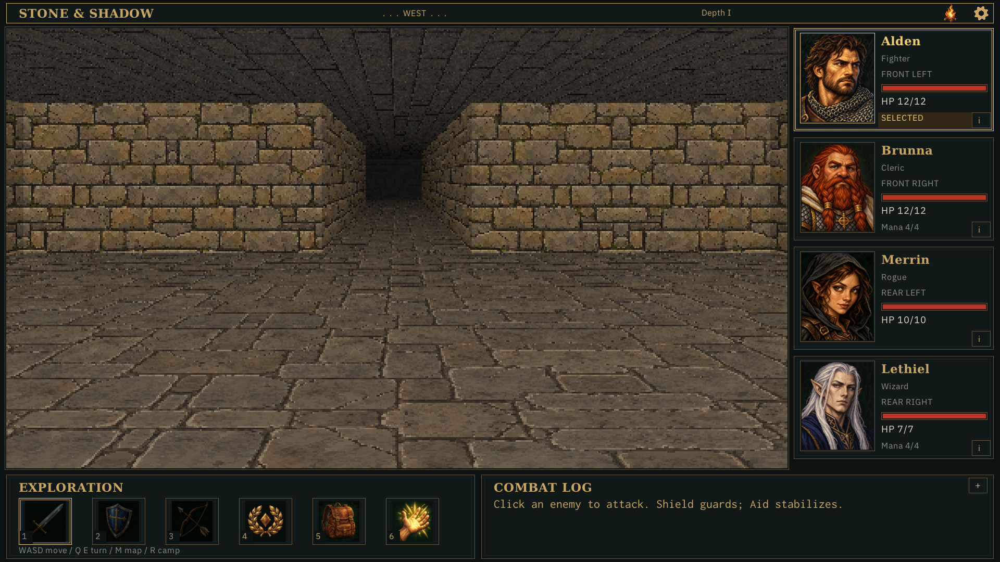
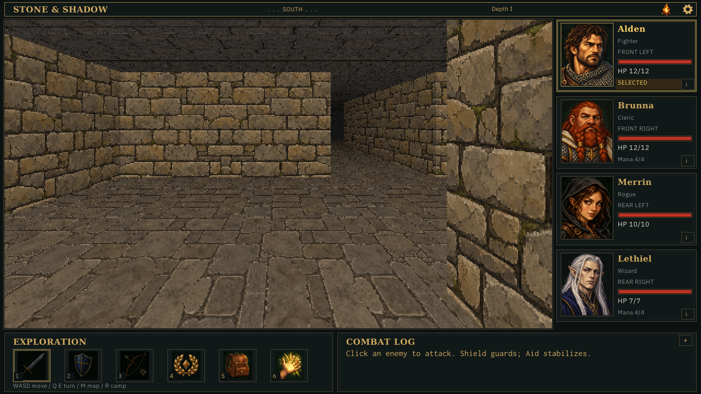
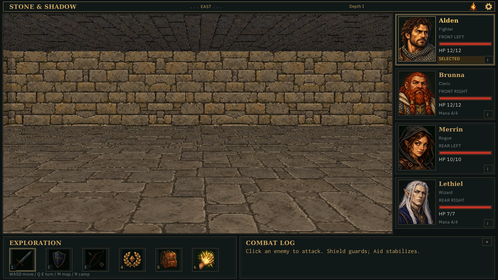
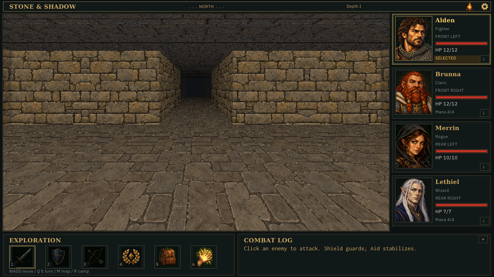
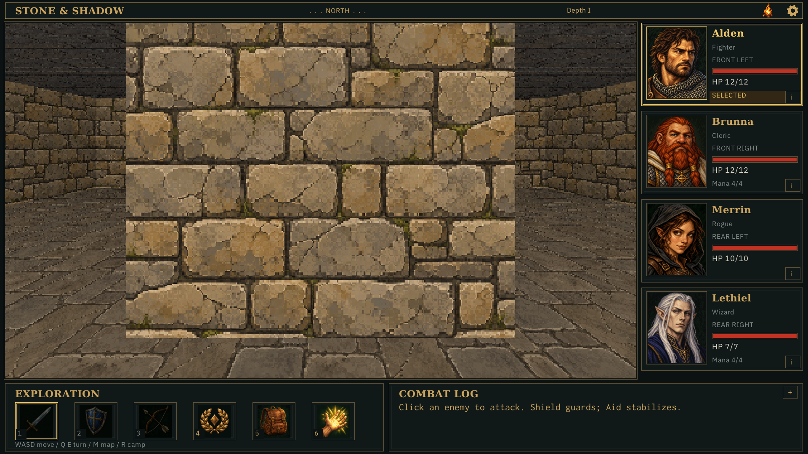
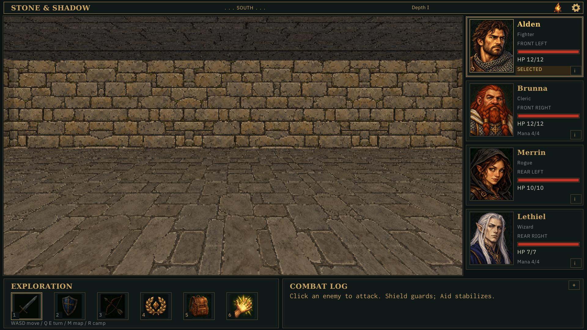
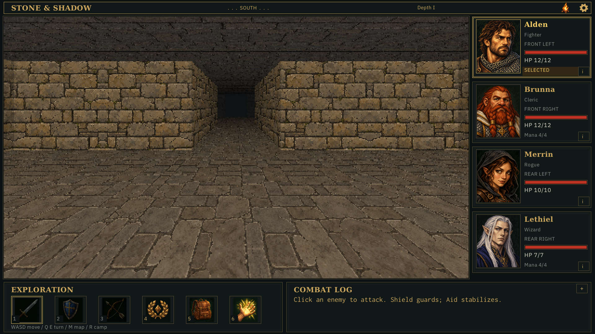
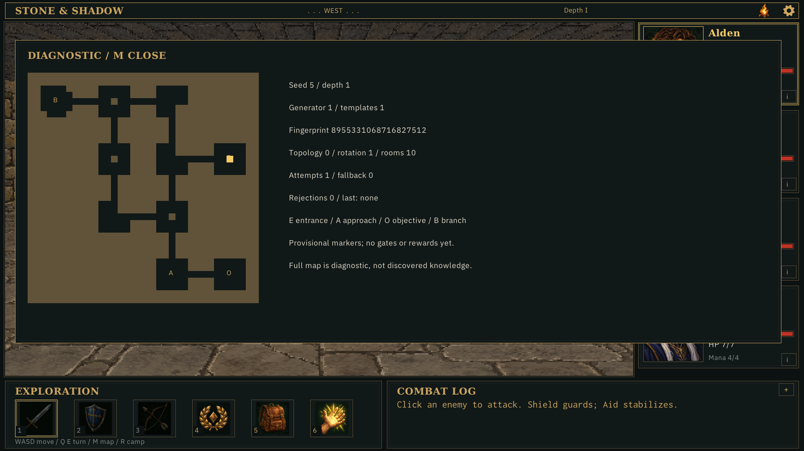
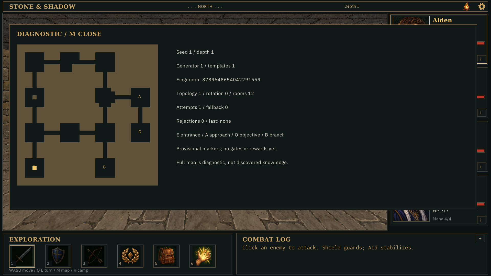
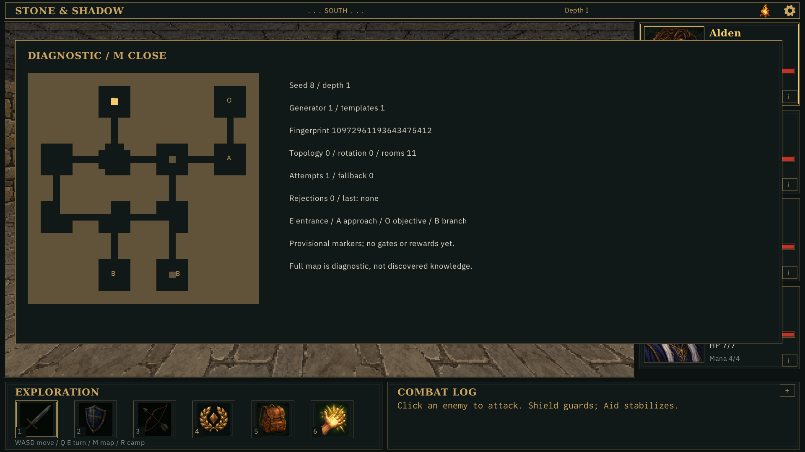
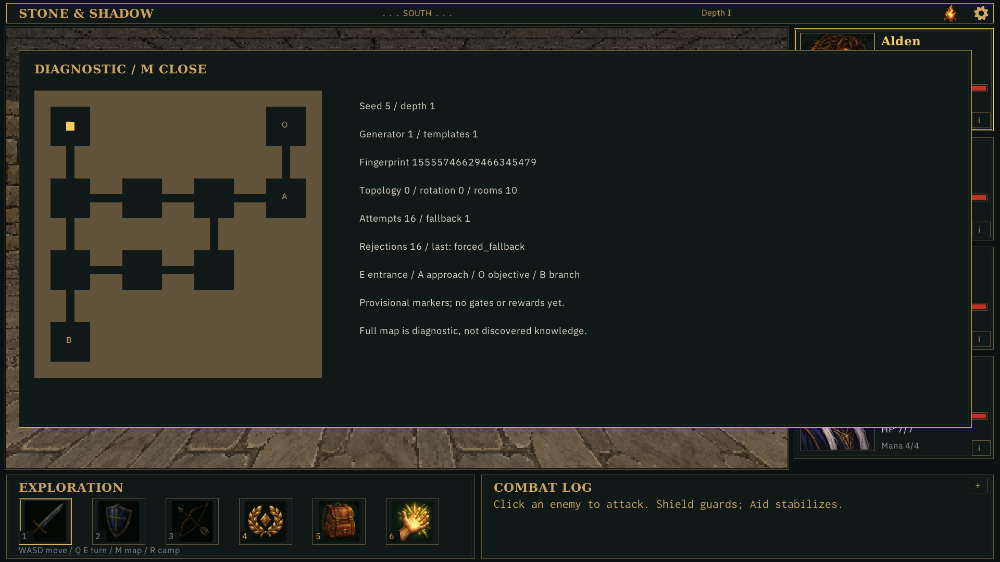
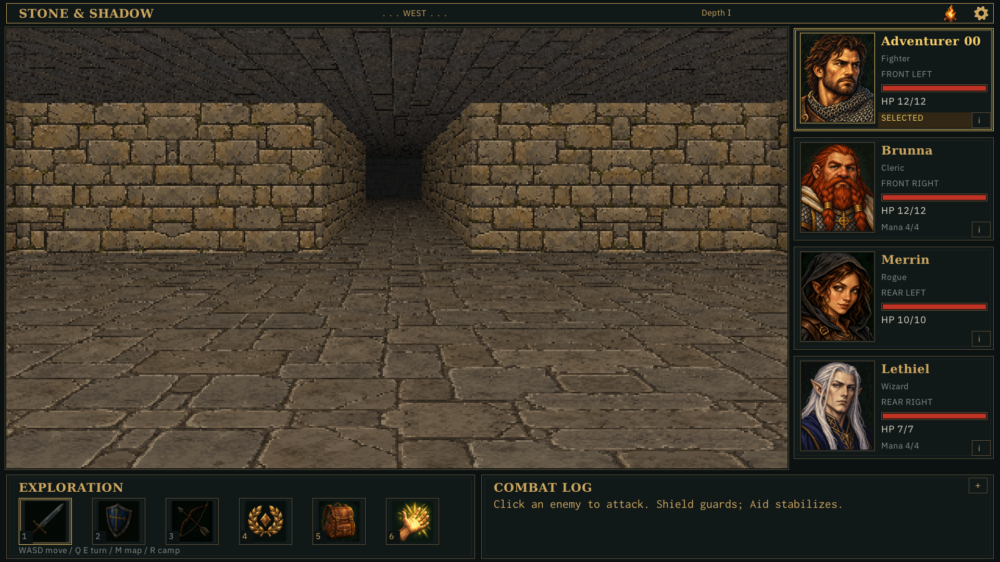